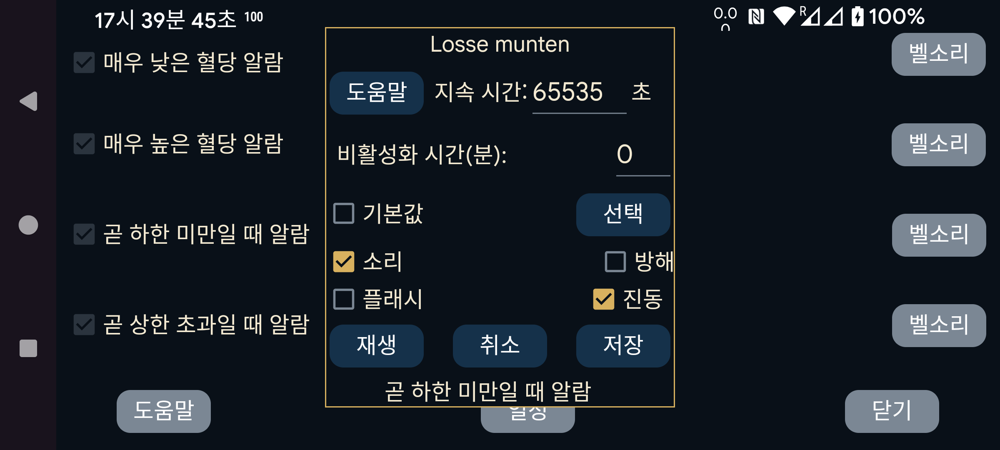

알람 또는 알림에 사용할 벨소리와 재생할 초 수를 선택합니다.
비활성화 시간(분): 저혈당 또는 고혈당 상태가 계속되어도 알람이 즉시 다시 울리지는 않습니다. 상태가 계속될 때 몇 분 뒤 알람을 다시 울릴지 지정합니다.
소리: 소리를 냅니다.
기본값: 기본 소리를 사용합니다.
선택: 벨소리를 선택합니다. 일부 Samsung 휴대전화에서는 기본 설치된 벨소리 선택기 앱이 충돌하므로 다른 앱에서 사용할 수 있는 별도의 벨소리 앱을 설치해야 합니다. 예: https://play.google.com/store/apps/details?id=com.centralparkapps.ringo.ringtones 또는 https://apkcombo.com/ringtone-picker/de.kumpewo.ringtones
진동: 진동합니다.
방해: “방해 금지”가 켜져 있으면 알람을 재생하기 전에 끕니다. Juggluco에 필요한 권한이 없으면 권한을 부여할 Android 설정 화면으로 이동합니다. “방해 금지”를 켠 뒤 재생, 을 눌러 알람이 다음 상태에서 작동하는지 시험할 수 있습니다: “방해 금지”. 이전 Juggluco 버전에서는 “방해 금지”를 알람 뒤에 다시 켰지만 현재 버전에서는 그러지 않습니다. 자동 방해 금지 기간에 알람이 울렸을 때 그 상태가 예약된 시각에 자동으로 꺼지지 않는 부작용이 있었기 때문입니다. 자동 “방해 금지” 기간에 이 문제가 생겼습니다. 알람을 “방해 금지” 중 듣고 싶지 않다면 이전 화면의 “알람 유형: 알람” 선택도 해제해야 할 수 있습니다.
플래시: 플래시/손전등이 있는 스마트폰은 같은 초 수 동안 빛을 깜박일 수도 있습니다. 벨소리를 사용할 수 없는 곳(예: 교실)에서 규칙이 점멸등을 별도로 금지하지 않는 경우 유용합니다.